Dossier de postulación · uso interno
El Grimorio del Archipiélago
Índice del expediente presentado al Fondart Regional 2027, línea de Creación Artística. Esta página no es parte de la obra: es la carpeta de trabajo de la postulación. La obra evaluada es el sitio publicado.
- Convocatoria
- Fondart Regional, año de ejecución 2027
- Línea
- Creación Artística
- Folio
- 878718
- Región
- Los Lagos
- Cierre
- 16 de septiembre de 2026, 15:00
- Envío
- por confirmar — se registra al recibir el certificado de recepción
- Responsable
- Lucas Paredes Vásquez
La obra
Sitio publicado
Archivo digital y recorrido cultural del imaginario mitológico de Chiloé y su entorno insular. Se recorre como un descenso, de la superficie del mar al lecho, y se consulta como archivo. Público, gratuito, sin registro ni publicidad.
Estado verificado del corpus
Cifras contadas contra los archivos del repositorio, no copiadas de
documentación previa. El detalle y su método de verificación están en
docs/ESTADO-VERIFICADO-2026-08.md.
Territorio
Ocho lugares con fuente verificada en el repositorio, sobre la silueta real de las comunas de la provincia:
- Quicaví — capital de la Recta Provincia; en su costa, la cueva
- Tenaún — origen legendario, hacia 1786
- Achao — distrito, en la isla Quinchao
- Queilén — distrito
- Isla Caucahué — distrito insular, frente a Quemchi
- Rauco — distrito, al sur de Castro
- Dalcahue — distrito, puerta del mar interior
- Ancud — sede del proceso de 1880 y del Museo Regional
Cuatro lugares que circulan en la web quedaron fuera por no tener fuente citable. El descarte es parte del método.
Documentos
La carpeta documentos/ está vacía. Los documentos de la
postulación se trabajan fuera del repositorio y se incorporan al cierre.
Capturas de la obra
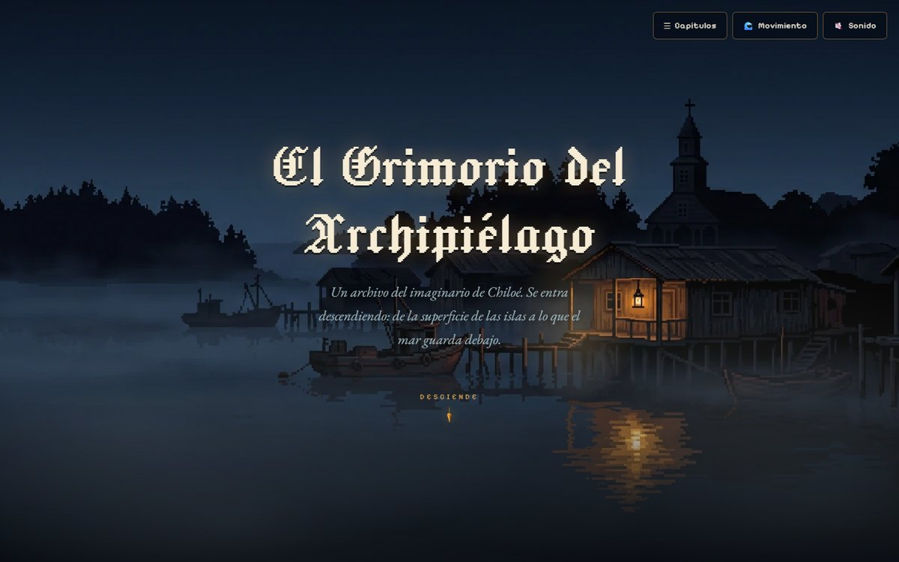
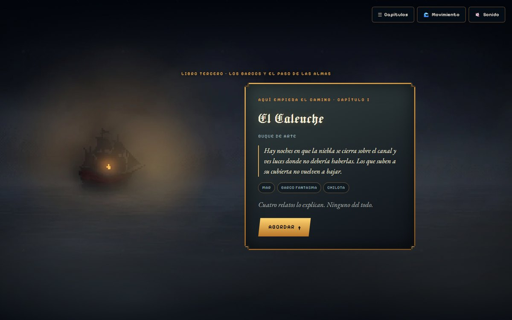
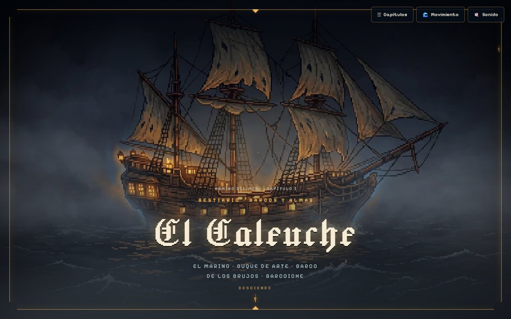
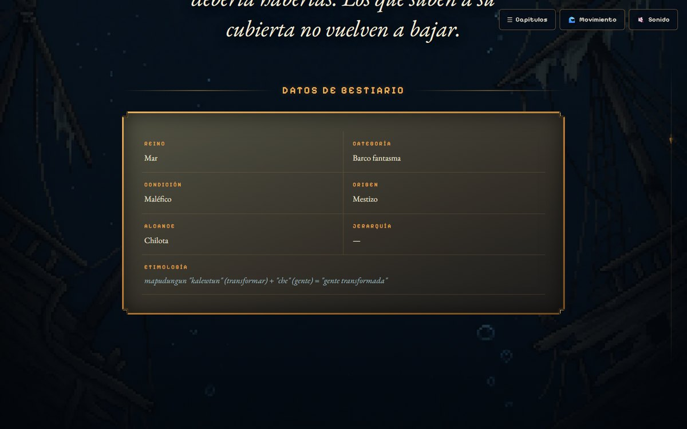
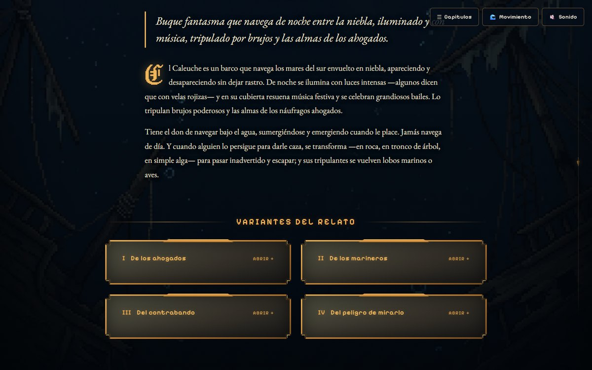
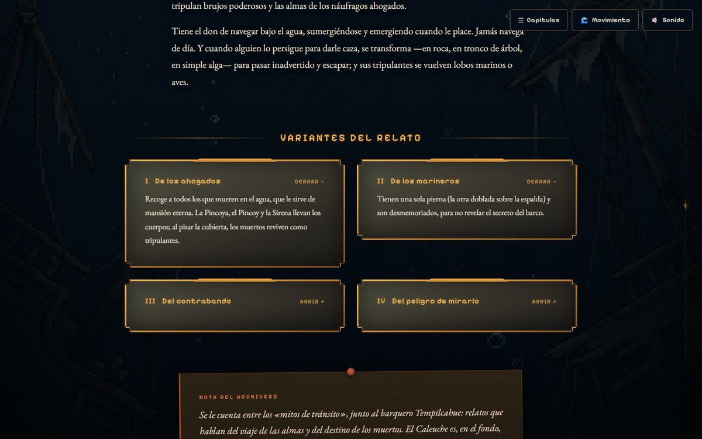
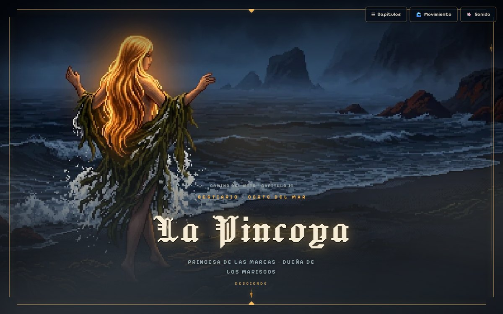
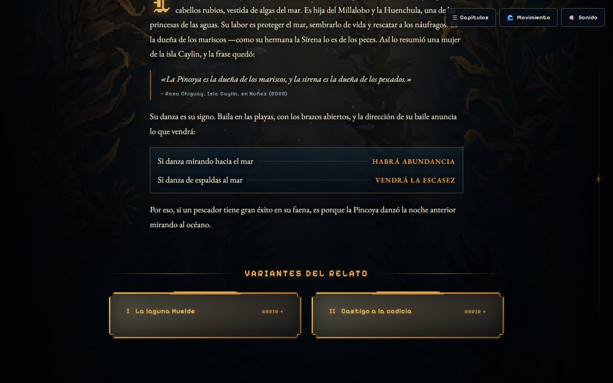
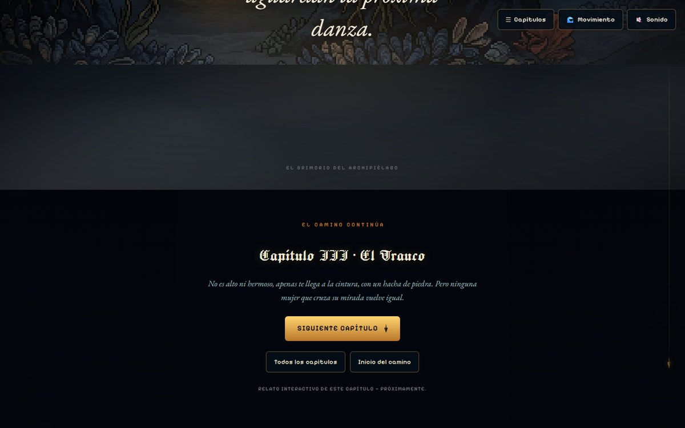
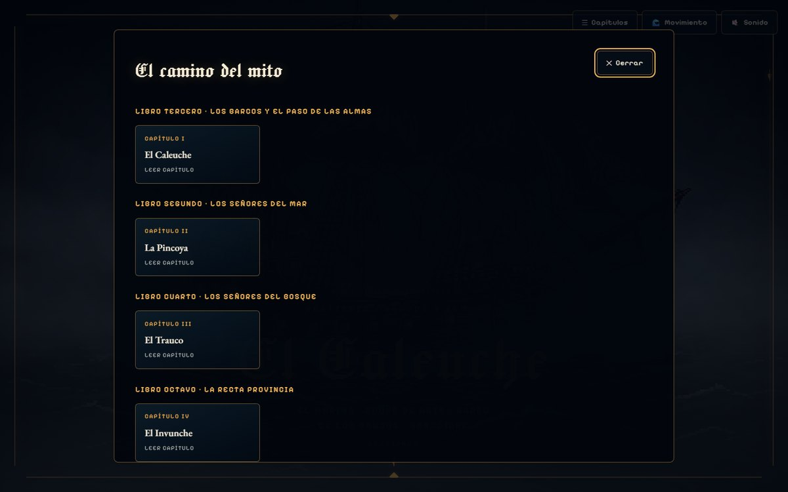
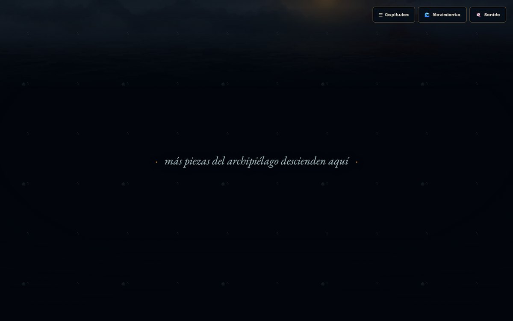
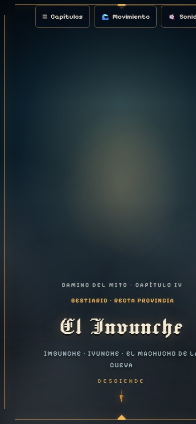
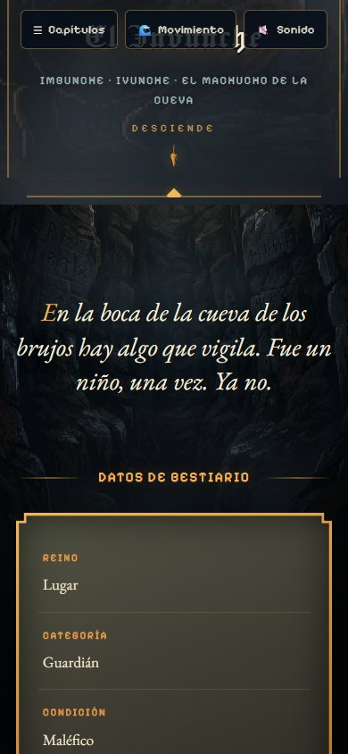
Las capturas son copias de las tomadas para la postulación anterior
(Fondo Cultura Puente Chacao 2026) y documentan el estado de la obra en ese
momento. Los originales se conservan intactos en postulacion/.
Toda pieza visual del proyecto se rotula como recreación artística
contemporánea; ninguna se presenta como iconografía tradicional documentada.